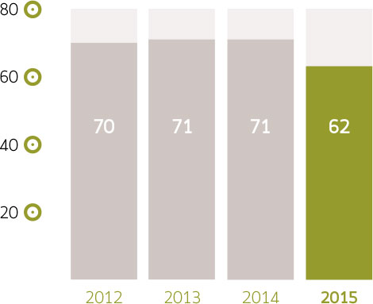
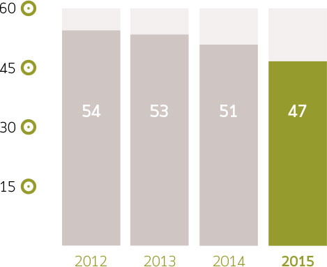
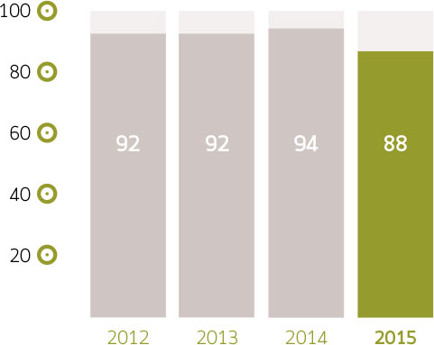
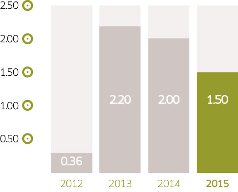

ANALYSIS OF

RESULTS
CEO Report on 2015 Results
Sales, Earnings and Gross Margins
Consolidated sales increased 1% for the year. The
negative effect of falling prices on the products we
sell was greater than the positive impact of a weaker
peso. The average exchange rate for 2014 was
Ps 13.30 per dollar, and Ps 15.88 per dollar in
2015, a 12 month depreciation of 19%.
Gross income grew 5% from Ps 1.05 billion in 2014 to Ps 1.11 billion. We managed to grow the gross margin despite reductions in prices for key products such as solvents, dairy derivatives, corn derivatives and mining inputs.
Our gross margin widened 80 bp to 18.2% thanks to our effective cost controls and increasing focus on higher margin products such as blends and chemicals for the food industry. The 19% weakening of the peso in relation to the US dollar (USD) in 2015 only partially cancelled out the effect of the contraction in raw material prices, especially in the case of petroleum derivatives, as the prices of such products fell between 30% and 60% in dollars.
| 2014 | 2015 | |
|---|---|---|
| 17.4% | Gross margin | 18.2% |
Operating Income and EBITDA
Operating income increased by 14% in 2015, growing
from Ps 195 million in 2014 to Ps 223 million.
The 3.7% operating margin was 50 bp greater than in 2014. The solid performance of operating income was achieved on the strength of the wider gross margin, aided by the growing emphasis on sales of value added products. EBITDA increased 13% above that of 2014 at the same time as the EBITDA margin grew 60 bp to 5.6%.
Operating expenses (excluding depreciation) rose 2% compared to 2014. As a percentage of sales, expenses grew slightly from 12.4% in 2014 to 12.6% in 2015.
| 2014 | 2015 | |
|---|---|---|
| 12.4% | Expenses / sales | 12.6 % |
Financial expense and net income
Net interest expense decreased 2% year on year. The
trend toward a reduction on financial expenses was
sustained through all of 2015.
The company recorded a Ps 34 million net profit for the year, more than six times greater than what it registered in 2014. Net income was favored by the rise in operating income and EBITDA and by the reducing in interest expense. Those effects offset the negative impact of the Ps 94 million foreign exchange loss for the year.
Working capital and Cash Generation
At the end of 2015, our working capital was equivalent to
22 days of sales, 11 fewer days than at the end of 2014.
Company management reiterates our commitment to prioritizing the scaling back inventories and reducing accounts receivable in order to lower our degree of financial leverage.
As a result of the increase in EBITDA and the reduction in working capital, it was possible to expand our cash position 19% during 2015, expanding it from Ps 324 million at the end of 2014 to Ps 386 million at the end of 2015, thereby expanding cash on hand by Ps 62 million.
Inventory Days

Accounts Receivable Days

Accounts Payable Days

Net Debt / EBITDA
Net debt and leverage metrics
Net debt at the end of 2015 was Ps 554 million, 9%
or Ps 57 million less than at the end of 2014. As we
informed the public at the time, on December 4 2014,
we concluded our refinancing of a Ps 610 million,
syndicated credit with HSBC México, S.A., Institución
de Banca Múltiple, and Grupo Financiero Inbursa, S.A.
The original credit had been scheduled to come due
in June 2015. The new loan is for four years with
a one-year grace period.
Net debt to EBITDA decreased to 1.6 times at the end of 2015, down from 2.0 times at the end of 2014. That level is in line with our internal policy of not surpassing 2 times. It is important to point out that this indicator had risen from 1.8 times prior to the Coremal acquisition, which concluded December 31, 2013, to a more than two year high of 2.8 times at the end of 2Q14. This was a result of the consolidation of the Brazilian debt of Coremal (equivalent to Ps 285 million), and the Ps 170 million in credit Pochteca acquired to finance the acquisition. At the time, we informed the market that we had a clearly defined route map for bringing this multiple back to, or below our target of 2.0 times, and we made good on that promise.
We remain focused on generating cash flow through an energetic management of working capital and both cost and expense controls as a way to increase EBITDA.
In 2015, interest coverage (EBITDA / interest) was 3.0 times, a higher level than the 2.7 times registered in 2014.
| 2014 | 2015 | |
|---|---|---|
| Net debt (Ps million) | 611 | 518 |
| Net Debt / EBITDA 12 M | 2.0x | 1.6x |
| Interest coverage | 2.7x | 3.0x |
| Outstanding shares | 130,522,049 | 130,522,049 |
Stock buyback fund
The managers of Grupo Pochteca’s fund for repurchasing shares are:
- Punto Casa de Bolsa, S.A. de C.V.
- GBM Grupo Bursátil Mexicano, S.A. de C.V., Casa de Bolsa (GBM)
On October 7, 2015 we informed market participants that as of that date we began to manage our share repurchase fund with GBM. This share repurchase fund had been managed by Punto Casa de Bolsa, S.A. de C.V., which will continue managing it jointly with GBM. With this initiative, Pochteca aims to increase the liquidity of its shares in the stock market with the support of these two financial institutions.
Market maker
As we informed market participants at the time, on October 22, 2015 we ended the contract for market maker services we had with UBS Casa de Bolsa, S.A. de C.V., UBS, Grupo Financiero (UBS). Pochteca thanks UBS for the services it provided during the time it acted as market maker.